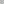
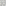
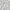

Grid Bestiary
This page provides a full list of grid classes available in Sylves. You can always create or customize your own grid if the ones here don't quite match your purpose.
Basic Grids
These are the most common grids you are likely to want to use.
|  | Square Grid |
| Cube Grid | |
 |
Hex Grid Supports both pointy topped and flat topped variants. |
| Triangle Grid Supports vertical and horizontal variants. |
{kind=link}
{kind=link}
{kind=link}
Periodic Grids
Periodic grids have a pattern that repeats via translation. These are usually called tessellations.
All the basic grids above are periodic, but some extra ones are supplied.
 |
Cairo Grid |
 |
TriHex Grid |
 |
MetaHexagon Grid |
 |
SquareSnub Grid |
|  | TetrakisSquare Grid |
|  | Rhombille Grid |
{kind=link}
{kind=link}
You can create your own periodic grids with PeriodicPlanarMeshGrid, described below.
Mesh Grids
Mesh grids accept a mesh as the input, and base cells of the grid off faces of the mesh.
 |
Mesh Grid Turns a mesh into a 2d grid, one cell per face. Doesn't need to be planar. |
 |
MeshPrismGrid Turns a mesh into a 3d grid, one cell being one extruded face in a given layer. |
|
PeriodicPlanarMeshGrid Can turn any planar mesh into a periodic grid by repeating the mesh at fixed intervals. |
 |
PlanarLazyMeshGrid Like PeriodicPlanarMeshGrid, splits the plane into periodic chunks and draws a mesh in each chunk. But the meshes are lazily loaded from a user-specified function, so don't have to repeat. |
Prism Grids
"Prism" are when you take a 2d polygon, and extrude it into a 3d shape. This can convert 2d grids into 3d ones, usually with the z-cordinate being the "layer", i.e. offset from the original grid.
|
MeshPrismGrid Turns a mesh into a 3d grid, one cell being one extruded face in a given layer. |
| HexPrismGrid A special case of PlanarPrismModifier applied to a hex grid. |
|
| TrianglePrismGrid A special case of PlanarPrismModifier applied to a triangle grid. |
|
 |
PlanarPrismModifier Takes a 2d planar grid, and extends it into multiple layers along the third the dimension. |
{kind=link}
{kind=link}
Substitution Tiling Grids
Substitution tiling grids use recursive subdivision to fill the space with tiles. They are well known as a way of creating aperiod grids
|  | Domino Grid A grid of dominos (6 sided cells the shape of a rectangle) tiled in an aperiodic pattern. |
 |
Penrose Rhomb Grid Also known as the penrose P3 tiling. |
 |
Chair Grid The Chair Tiling is a simple L shaped aperiod rep-tile. |
{kind=link}
Voronoi Grids
Voronoi
 |
VoronoiGrid Creates a grid from a Voronoi diagram based on a set of input points. |
|  | JitteredSquareGrid An infinite version of VoronoiGrid where the points are taken from random positions in the cells of a square grid. |
{kind=link}
Modifier Grids
Modifier grids let you customize an existing grid by systematically changing it in some way.
| TransformModifier Changes the world space positioning of the grid by a linear transform, leaving everything else unchanged. |
|
 |
MaskModifier Filters the cells in the the grid to a customizable subset. |
 |
BijectModifier Remaps the cells of the grid by changing their co-ordinates, without touching the position, shape or topology. |
 |
RavelModifier Relabels all the cell co-ordinates to be 1d, i.e. cell.y and cell.z are always zero. |
|
PlanarPrismModifier Takes a 2d planar grid, and extends it into multiple layers along the third the dimension. |
 |
WrapModifier Turns any bounded grid into a grid which connects back on itself when you leave the grounds. |
| RelaxModifier Applies mesh relaxation to any grid, smoothing out sharp edges. |
|
 |
NestedModifier Replaces every cell with another grid. |
{kind=link}
{kind=link}
Extra Grids
These grids don't classify neatly and usually serve as demos for various features.
| MobiusSquareGrid A grid in the shape of a Möbius strip. This is mostly to demonstrate how Sylves handles non-orientable surfaces. |
|
| CubiusGrid A Möbius strip with thickness, and only a quarter turn instead of a half turn. This is mostly to demonstrate how Sylves handles advanced cases of holonomy. |
|
|
WrappingSquareGrid Turns any bounded grid into a grid which connects back on itself when you leave the grounds. |
| TownscaperGrid This is a specific implementation of PlanarLazyMeshGrid with a RelaxModifier applied. It is modelled after the grid used for Townscaper |
|
| OffGrid This implements Chris Cox's OffGrid, a packed grid of irregular rectangles. |
{kind=link}
{kind=link}
{kind=link}